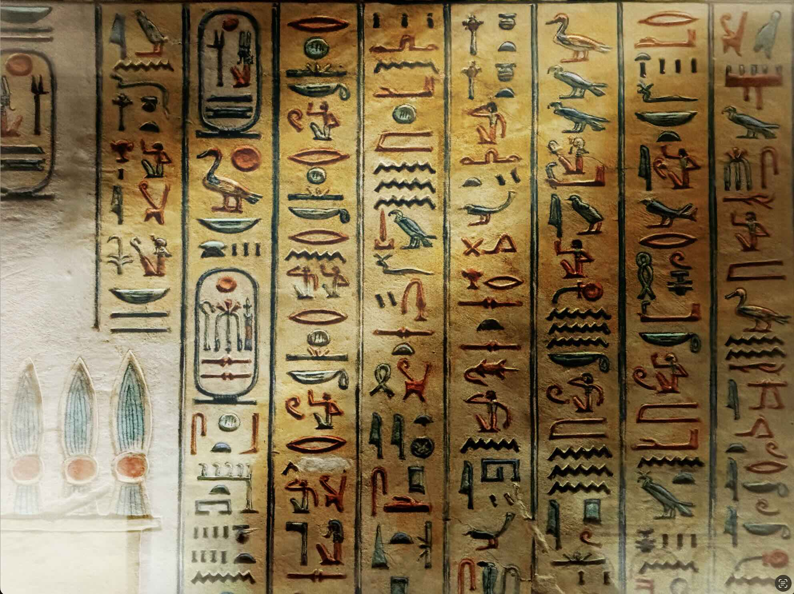

I geroglifici egizi sono i segni scolpiti che compongono il sistema di scrittura monumentale utilizzato dagli antichi Egizi, che combinano elementi logografici, sillabici e alfabetici. L'uso di questo tipo di scrittura era riservato a monumenti o qualsiasi oggetto, come stele e statue, concepiti per essere eterni; la scrittura corrente e quotidiana in Egitto era quella ieratica.
Il termine geroglifico deriva dal latino hieroglyphicus, a sua volta dal greco hieroglyphikós nella locuzione hieroglyphikà gràmmata, "segni sacri incisi" composta dall'aggettivo hieròs, che significa "sacro", e il verbo γλύφω glýphō, che significa "incidere". Il riferimento all'incisione si deve al fatto che questi simboli venivano solitamente scolpiti nella pietra e impiegati nella scrittura monumentale, come nei templi, assumendo così un valore sacro. A questa si affiancava lo ieratico, riservato alla scrittura corrente su papiro. Il termine egizio per geroglifici è traslitterato come mdw nṯr (spesso trascritto, perché così convenzionalmente pronunciato, medu netjer), letteralmente "parole del dio", con riferimento al dio Thot cui era attribuita l'invenzione della scrittura.